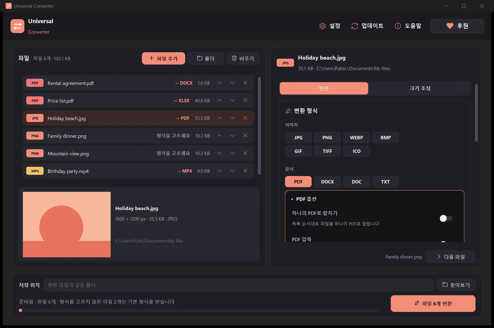

사진이나 서명을 20KB, 50KB 또는 정확한 픽셀로 크기 조정
온라인 지원서와 시험 접수 양식은 200 × 230 픽셀처럼 정확한 크기에 20KB나 50KB 미만인 사진이나 서명을 요구하는 경우가 많습니다. Universal Converter는 두 가지를 한 번에 맞추고, 그 크기에서 가능한 한 선명하게 유지합니다. 사진은 기기 밖으로 나가지 않습니다.
무료 · Windows 10, 11 (64비트) · ✓ 바이러스 없음 (VirusTotal)Windows에서 다운로드나 앱을 차단하나요? Microsoft Store에서 받으세요. 같은 무료 앱이며 Windows가 신뢰합니다.
Mac용 다운로드 Apple 실리콘, macOS 12 이상 · ✓ 바이러스 없음 (VirusTotal)
설치 및 업데이트 방법
- 다운로드한 .dmg를 열고 Universal Converter를 응용 프로그램으로 드래그하세요.
- 앱을 여세요. 처음에는 Apple 서명이 없어서 macOS가 차단합니다. 완료를 클릭하세요.
- 시스템 설정 > 개인정보 보호 및 보안을 열고 아래로 스크롤한 뒤 '그래도 열기'를 클릭하고 암호를 입력하세요. 한 번만 하면 됩니다.
업데이트: 앱을 처음 열 때 허용하면, 시작할 때마다 새 버전을 확인하고 디지털 서명을 검증한 뒤 원하는 때에 설치합니다.
Android용 다운로드 Android 10 이상 · ✓ 바이러스 없음 (VirusTotal)
설치 및 업데이트 방법
- 휴대폰에서 'Android용 다운로드'를 누르세요.
- 다운로드한 파일을 여세요. Android가 요청하면 브라우저나 파일 관리자에 앱 설치를 허용하세요.
- 설치를 누르세요.
업데이트: 앱을 열면 새 버전이 있는지 확인하고 준비되면 알려 줍니다. 같은 방법으로 다운로드해 기존 앱 위에 설치하면 설정이 그대로 유지됩니다.
Linux용 다운로드 64비트 (x86_64): Ubuntu 22.04, Debian 12, Fedora 36 이상 · ✓ 바이러스 없음 (VirusTotal)
설치 및 업데이트 방법
- .AppImage 파일을 다운로드하세요.
- 실행할 수 있게 만드세요: 마우스 오른쪽 버튼 > 속성 > 권한에서 프로그램으로 실행을 허용합니다(또는 터미널에서: chmod +x Universal-Converter-*.AppImage).
- 두 번 클릭하세요. 설치할 것이 없습니다. 앱은 이 파일 하나입니다.
업데이트: 처음 열 때 허용하면 시작할 때마다 새 버전을 확인하고, 디지털 서명을 검증한 뒤 같은 자리의 AppImage 파일을 바꿉니다.
방법
- Universal Converter를 엽니다.
- 파일이나 폴더를 창으로 끌어다 놓거나 '파일 추가'를 누르세요.
- 위쪽에서 '크기 조정'(으)로 바꾸고 '둘 다'을(를) 고른 뒤, 양식이 요구하는 너비와 높이, 최대 파일 크기(예: 20KB)를 입력하세요.
- '변환'을(를) 누르세요. 새 파일은 원본 옆이나 선택한 폴더에 저장됩니다.

왜 오프라인인가요?
Universal Converter는 내 기기에서 작업합니다. 파일은 비공개로 유지되고, 큰 파일도 문제없으며, 인터넷 연결 없이도 작동합니다.
더 할 수 있는 일
- PDF를 Word로 변환
- Word 문서를 PDF로 변환
- 여러 파일을 하나의 PDF로 합치기
- PDF를 원하는 크기로 압축
- PDF를 100KB, 200KB 등 온라인 양식이 요구하는 크기로 압축
- PDF 페이지를 JPG 이미지로 변환
- 스캔한 문서를 편집 가능한 Word 파일로 변환
- JPG, PNG, WEBP 등 사이에서 이미지 변환
- 이미지 크기 조정 또는 파일 크기로 줄이기
- 사진을 하나의 PDF로 합치기
- JPG를 100KB 미만 PDF로
- 이미지 속 글자 복사하기 (OCR)
- 업로드 없이 동영상 압축하기
- MP4, MKV, WebM, MOV, AVI 사이에서 동영상 변환
- 동영상의 소리를 MP3로 저장
- 동영상으로 GIF 만들기
- PDF의 표를 Excel로 가져오기
- PDF 은행 거래내역서를 Excel로 변환
- PDF 청구서의 표를 Excel로 추출
- PDF에 서명하기
- PDF 양식 작성하기